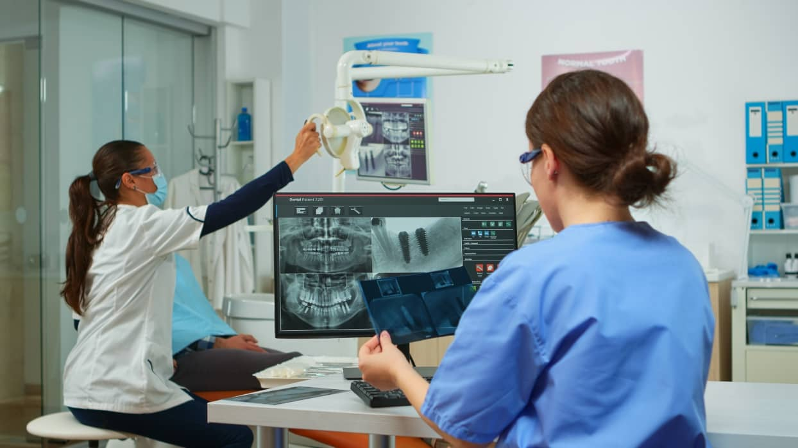

"Cada solución está pensada para adaptarse a tus necesidades y garantizar resultados de calidad."
Ofrecemos un seguimiento minucioso y personalizado durante todas las etapas del embarazo, asegurando la salud de la madre y el bebé.
Con tecnología de vanguardia, detectamos malformaciones fetales, complicaciones y posibles problemas genéticos desde las primeras etapas del embarazo.
Brindamos asesoría personalizada para elegir el tipo de parto más seguro y adecuado según las necesidades médicas de cada paciente.
Especialistas altamente capacitados manejan embarazos con condiciones complejas como hipertensión, diabetes gestacional y preeclampsia. Nuestro enfoque integral busca prevenir y tratar complicaciones, garantizando la mejor experiencia posible para la madre y el bebé.
Supervisamos cuidadosamente embarazos de gemelos, trillizos o más, asegurando un monitoreo continuo y el desarrollo saludable de todos los bebés, mientras protegemos la salud de la madre.
Cuando se identifican condiciones fetales, ofrecemos opciones avanzadas de tratamiento intrauterino y diseñamos un plan de parto personalizado. Trabajamos en equipo para brindar las mejores soluciones médicas.
Realizamos chequeos regulares enfocados en prevenir enfermedades como el cáncer de cuello uterino, infecciones y desequilibrios hormonales. Nuestro objetivo es cuidar la salud ginecológica en todas las etapas de la vida.
Ofrecemos diagnóstico y tratamiento personalizado para mujeres que enfrentan problemas de fertilidad. Desde estudios básicos hasta opciones avanzadas de reproducción asistida, nuestro equipo trabaja para cumplir el sueño de ser madre.
Proporcionamos un manejo integral para condiciones como la endometriosis, el síndrome de ovario poliquístico y los cambios hormonales asociados con la menopausia, mejorando la calidad de vida de nuestras pacientes.

Contamos con equipos de ultrasonido de última generación para evaluar en detalle el desarrollo del bebé y detectar cualquier anomalía en las etapas tempranas del embarazo.
Realizamos procedimientos laparoscópicos para tratar diversas afecciones ginecológicas, reduciendo los tiempos de recuperación y las molestias postoperatorias.
Ofrecemos diagnósticos prenatales no invasivos que permiten evaluar problemas cromosómicos y genéticos, ayudando a las familias a tomar decisiones informadas.
Proporcionamos apoyo emocional a madres que enfrentan situaciones complejas o embarazos de alto riesgo. Ayudamos a fortalecer su bienestar psicológico durante esta etapa tan importante.
Nuestras clases de psicoprofilaxis ofrecen a las madres herramientas físicas y emocionales para afrontar el parto con confianza y seguridad.
Brindamos asesoría integral sobre lactancia, recuperación física y salud emocional después del parto, asegurando una transición saludable hacia la maternidad.
¡...Contamos con un equipo compuesto por ginecobstetras, perinatólogos, neonatólogos y otros especialistas que colaboran estrechamente. Esta sinergia permite ofrecer un cuidado completo y personalizado...!